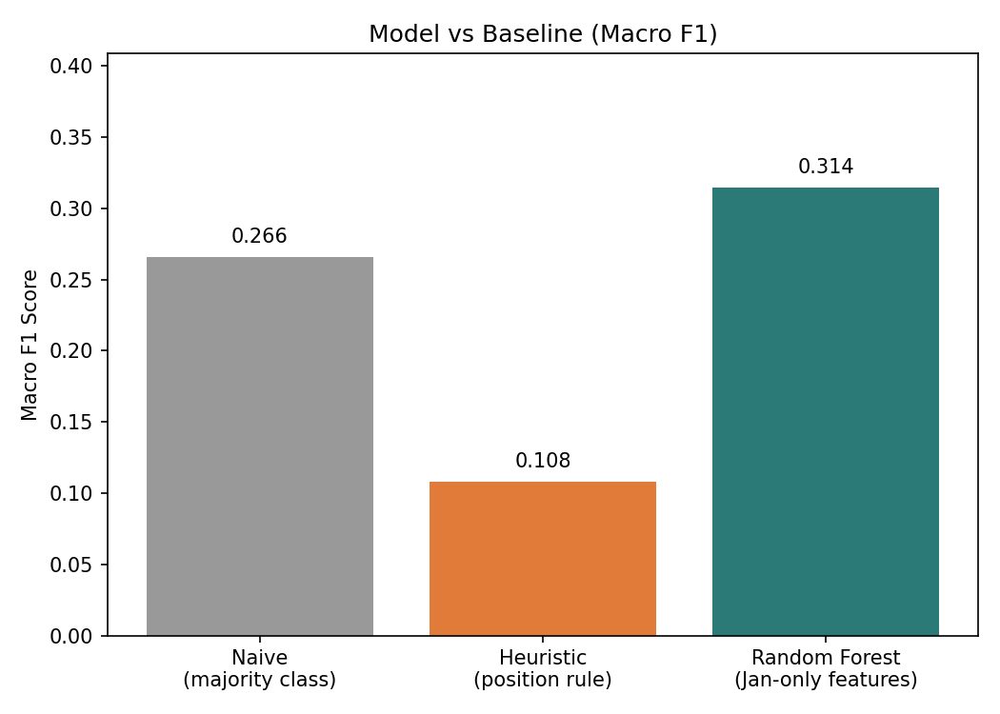
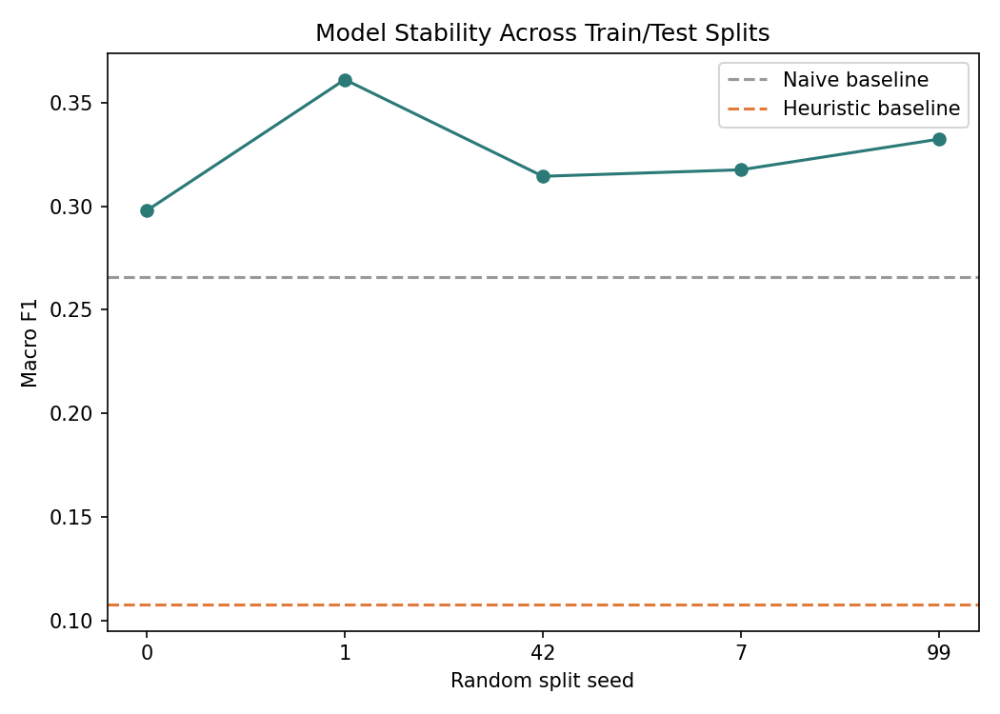
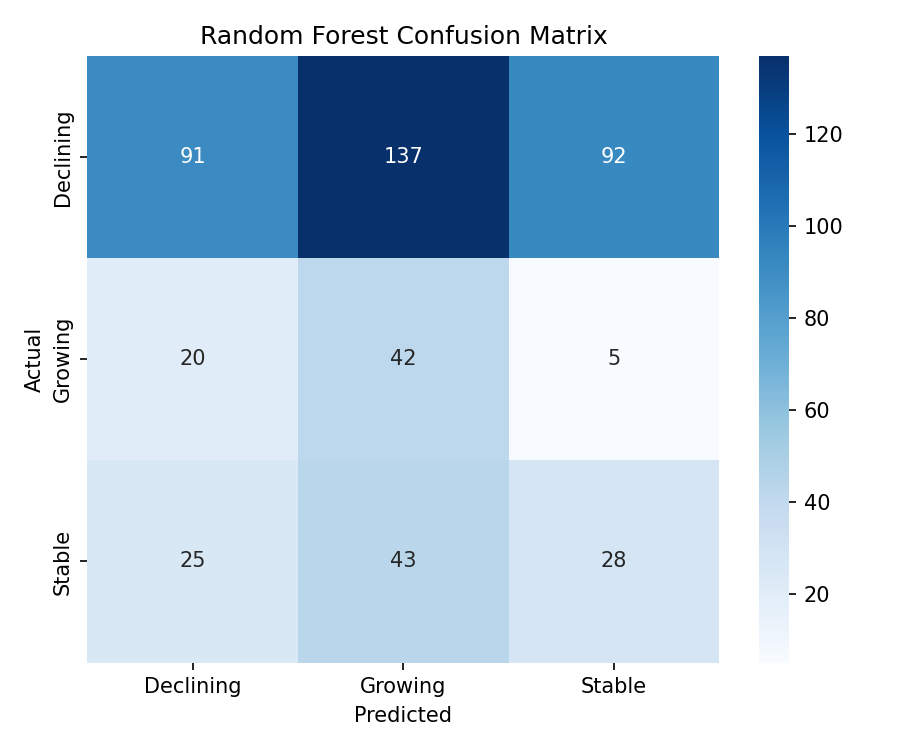
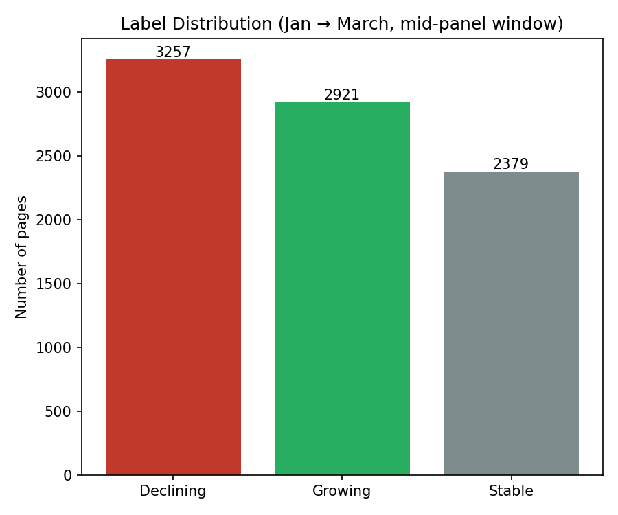

Five sentences, up front
This project asks which content pages are most likely to be declining, growing, or stable
in search performance, and whether a ranked scoring model can prioritize them for review
more effectively than a simple threshold rule. Using the FlyRank internship warehouse
(fact_content_daily_performance, ~78.8M rows), January 2026 and March 2026
click, impression, and position data were aggregated per client–content pair to define a
three-class label based on percentage change in clicks. A Random Forest classifier trained
on January-only signals — clicks, impressions, average position, and CTR — was compared
against a naive majority-class baseline and a position-based heuristic, using a
client-grouped train/test split to prevent leakage. The Random Forest achieved a macro F1
of 0.305, beating both the naive baseline (0.266) and the heuristic (0.108), with the
advantage confirmed stable across five different train/test splits (range: 0.284–0.354).
The output is a ranked, reason-coded review queue intended to help a content strategist
prioritize a limited number of pages for refresh — not to replace human judgment.
The decision this supports
Content strategists have limited time to review and refresh pages. This project's output ranks pages so review effort goes to the ones most worth acting on first — instead of reviewing in an arbitrary order or reacting only to the most obvious drops.
Unit of analysis
A (client, content) pair — one row per unique content item per client, aggregated over a calendar month window.
Who acts, and how
A content strategist or SEO editor takes the ranked list and decides, per page: refresh the content, leave it alone, or continue monitoring it.
Cost of a wrong call
Missing a real decline means a page keeps losing visibility unnoticed until the next review cycle. Flagging a stable or growing page as declining wastes editor review time. Missed declines are treated as the costlier error, so scoring favors not missing real decliners over avoiding false alarms.
Why not just a plain rule
A simple threshold — "flag if clicks dropped more than 20%" — is a reasonable starting point, and is used here as the baseline. But it can't weigh multiple signals together, and behavior varies by content type and volume. A model earns its place only if it measurably beats this baseline on the same data and metric; that comparison is reported honestly in the Results section below, including where the improvement is modest.
Source, windows, and exclusions
FlyRank internship warehouse (Hugging Face, gated, build v20260703) —
fact_content_daily_performance (grain: report_date × client × content, ~78.8M
rows, partitioned by month) and dim_clients (104 rows, access and history
metadata).
Date windows
Development used a mid-panel window — January 2026 as the "before" period, March 2026 as
the "after" period — rather than the final panel month (June 2026, matching the
_sample table), which was treated as sealed and untouched throughout.
What was excluded, and why
-
Label-derived fields (
trend_direction,trend_pct) were never used as features — they are computed from the same outcome being predicted. - Pre-GA4-start rows were excluded from GA4-dependent calculations, since GA4 columns are zero-filled — not genuinely zero — before a client's data start date.
- Low-volume pages (fewer than 10 January clicks) were dropped entirely — this cut the eligible set from 41,101 to 8,557 pairs, avoiding noise where small denominators produce misleading percentage swings.
Label, features, baseline, validation
Label definition
For each eligible pair, pct_change_clicks = (march_clicks − jan_clicks) / jan_clicks.
Pages are bucketed as Declining (≤ −20%), Growing (≥
+20%), or Stable (in between).
Baselines — both January-only, no future data
- Naive: always predict the majority class (Declining, 38.1%).
- Heuristic: a rule on
jan_avg_positionalone — worse than 20 → Declining; better than 8 → Growing; otherwise → Stable.
Model features (January-window only)
jan_clicks, jan_impressions, jan_avg_position,
jan_ctr. March-window values, label-derived fields, and pseudonymous IDs were
deliberately excluded.
Validation design
Train/test split grouped by client_hash_id (80/20,
GroupShuffleSplit) so no client's content appears in both sets — this prevents
client-specific leakage, since pages from the same client likely share systematic patterns.
No data from the sealed final month (June 2026) was used anywhere in training or
evaluation.
Model vs. baseline, same split
Accuracy is misleading here: the naive baseline's 66.3% accuracy comes entirely from a test set that happened to skew 66% Declining, an artifact of which four clients (of only 19 eligible) landed in the test split. Macro F1, which weights all three classes equally, is the fair metric and is used throughout.
| Method | Accuracy | Macro F1 |
|---|---|---|
| Naive baseline (majority class) | 0.663 | 0.266 |
| Heuristic baseline (position rule) | 0.120 | 0.108 |
| Random Forest (Jan-only features) | 0.329 | 0.305 |

Stability across splits
Re-evaluated across five different train/test splits (seeds 0, 1, 42, 7, 99), macro F1 ranged 0.284–0.354 — consistently above both baselines in every split, not an artifact of one favorable partition.

Where the model is right and wrong
The model correctly identifies 60% of Growing pages and 26% of Stable pages — categories the naive baseline gets 0% on. Its main error mode is under-predicting Declining (29% recall, 66% precision) — it is conservative about that call, which pairs well with the confidence-gated Refresh/Monitor split described in Recommendations.

Label distribution

What drives the predictions
| Feature | Importance |
|---|---|
| jan_clicks | 0.320 |
| jan_ctr | 0.247 |
| jan_impressions | 0.219 |
| jan_avg_position | 0.214 |
No single feature dominates — the model relies on a combined pattern across volume, CTR, impressions, and position rather than any one signal.
What this work cannot claim
- Not causal. This shows association between January-window signals and March-window outcomes, not that any signal causes growth or decline. No claims are made about ranking algorithm behavior.
- Small client count (19). Limits generalizability beyond the sampled clients, though the five-seed sensitivity check shows the model's edge over baseline holds regardless of which clients land in test.
- Modest, not strong, predictive power. Macro F1 of 0.305 is a real but modest edge — this is a directional, decision-support tool meant to narrow a review queue, not a replacement for human judgment on any single page.
- Two-window design. A single before/after comparison simplifies leakage control but means true "recovering" pages (declining, then improving) aren't distinctly identified from ordinary Growing pages.
- Volume floor. Pages under 10 January clicks were excluded entirely — this analysis says nothing about long-tail, low-traffic content.
The action playbook
Pages were ranked by decline-confidence and mapped to one of three actions:
Each page also carries a plain-language reason code, comparing its January signals against typical values for confirmed decliners in the training data:
How an editor uses this tomorrow
Start at the top of the Refresh list — a short, manageable queue for one review cycle. Read the reason code, check the page, and decide to update, rewrite, or leave as-is. Treat Monitor as a "check again next month" list. Treat Protect as do-not-touch unless there is a strong external reason.
Full ranked list: work/outputs/priority_queue.csv.
Run it yourself
- Clone the repo and open
work/notebooks/capstone.ipynbin Colab. - Run all cells top to bottom (Runtime → Run all). Provide a Hugging Face read token for
the gated
FlyRank/internship-warehousedataset when prompted. - Outputs write to
work/outputs/:priority_queue.csvand four chart PNGs.
Seeds: train/test split and Random Forest both use
random_state=42; sensitivity re-splits use seeds
[0, 1, 42, 7, 99].
Full methodology notes and error analysis: capstone_report.md. Complete code, notebooks, and outputs live in the GitHub repository.
Data credit
Built on the FlyRank ML Internship dataset.